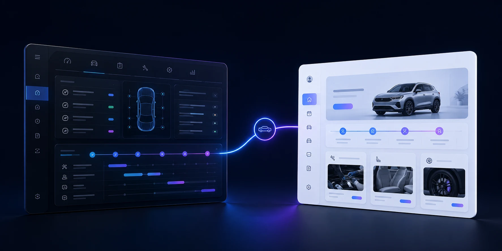
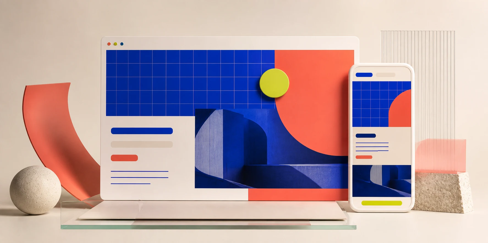
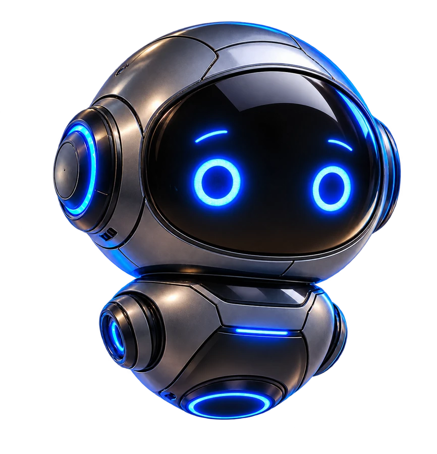

01
Sistema sob medida
Gestão automotiva conectada de ponta a ponta.
Uma experiência que organiza solicitações, atualizações da equipe e acompanhamento do cliente no mesmo fluxo.
Conhecer o sistema
Abrir demonstrações ↗Sites, sistemas, automação e IA
Da primeira ideia ao produto em uso, a Montes.dev une design, desenvolvimento e estratégia para construir soluções digitais claras, rápidas e úteis.
Projetos selecionados
Estratégia e execução caminham juntas, com atenção ao que a empresa e as pessoas precisam fazer.
Sistema sob medida
Uma experiência que organiza solicitações, atualizações da equipe e acompanhamento do cliente no mesmo fluxo.
Conhecer o sistema
Abrir demonstrações ↗Estes são alguns recortes. No laboratório, ideias e sistemas aparecem em diferentes estágios de exploração.
Visitar o laboratórioO que criamos

Conheça a AltriX
A atendente inteligente da Montes.dev entende o contexto da sua empresa, organiza a necessidade e aproxima você da pessoa certa.

Olá! O que você gostaria de criar ou melhorar na sua empresa?
Quero reduzir o tempo gasto com atendimento repetitivo.
Entendi. Hoje vocês já usam algum sistema para receber e acompanhar essas solicitações?
Como trabalhamos
Entramos no contexto do negócio, das pessoas e do resultado esperado.
Organizamos prioridades, escopo e uma direção visual coerente com o projeto.
Design e desenvolvimento avançam juntos, com ciclos curtos de validação.
Entregamos uma base sólida e acompanhamos o que precisa crescer depois.
Nosso compromisso
A solução parte do que a empresa precisa resolver, sem encaixar o projeto em uma fórmula pronta.
As escolhas de produto, visual e tecnologia aparecem com clareza ao longo do trabalho.
Explorar o laboratório ↗Código organizado, interfaces acessíveis e uma base preparada para manutenção e evolução.
Vamos conversar
Conte o momento da sua empresa. Nós ajudamos a encontrar o melhor primeiro passo.